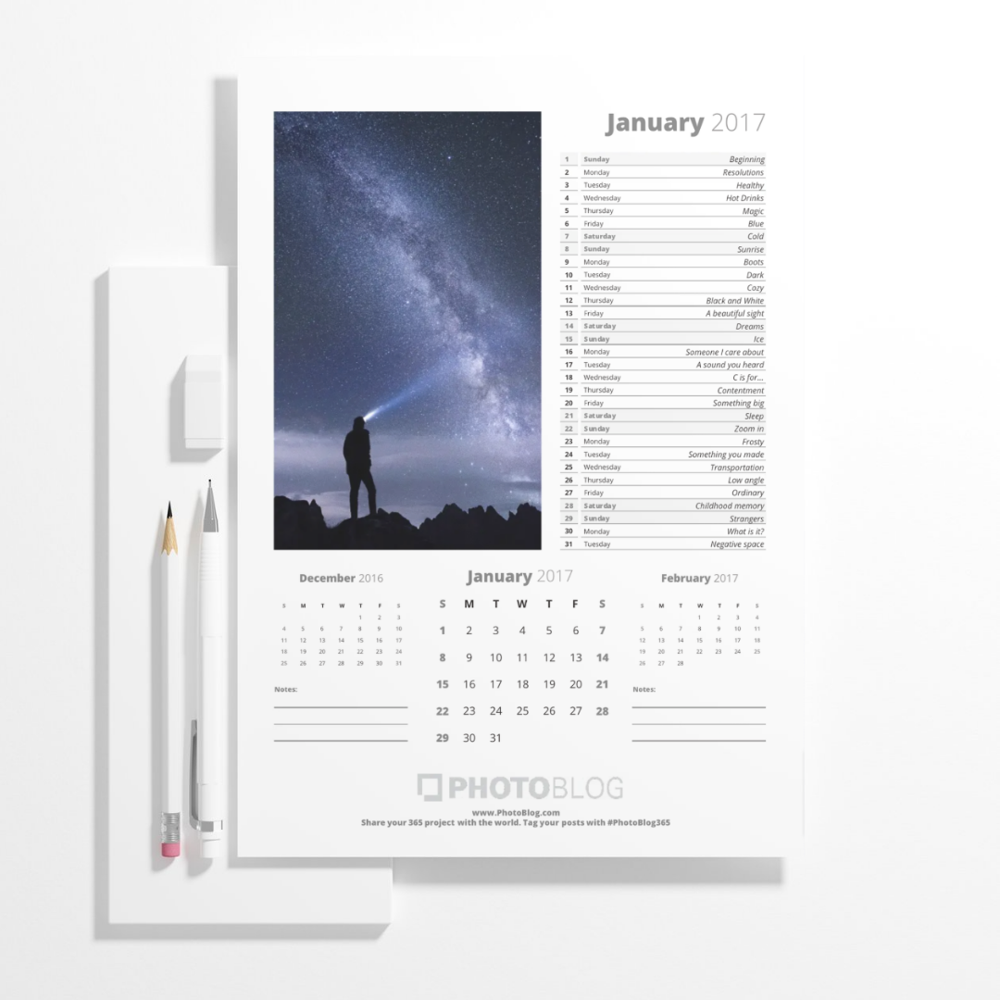
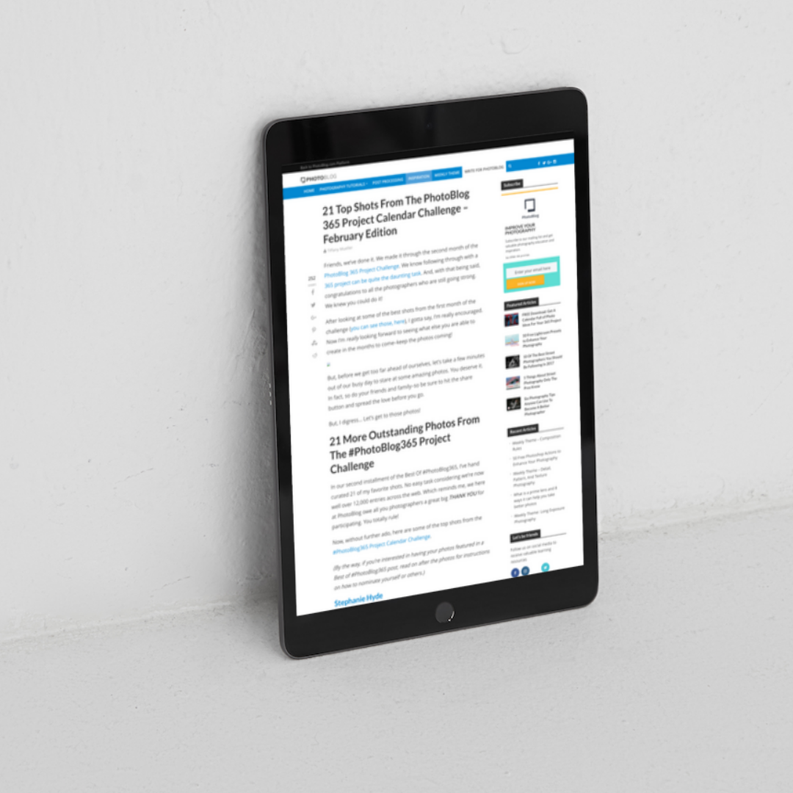
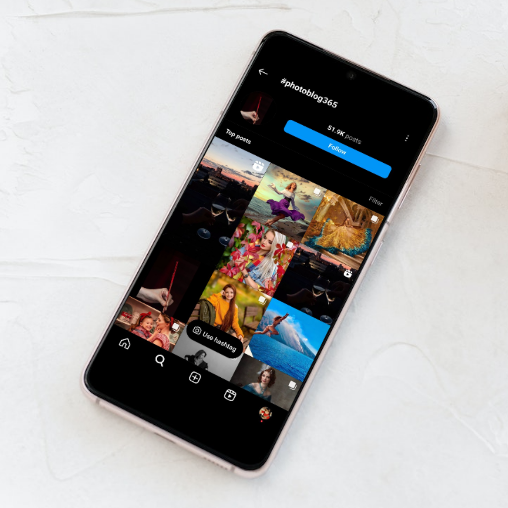

Tiffany Mueller | Content Strategist
Open to project based roles
Case Study
A content strategy case study focused on growing engagement, increasing subscriber awareness, and giving photographers daily prompts that kept them returning to the platform.
Increased platform subscribers by 300% in 24 hours.
Users connected and interacted with each others' posts.
Social media following grew 25% month-over-month.

PhotoBlog is a social platform with 100,000+ subscribers that gives photographers a dedicated place to share high-resolution images, find inspiration, and discover other unique voices.
My goal was to create an entire strategy that would attract more subscribers, engage users, and raise brand awareness for my client.
Target user
Photographers looking for motivation and support to complete photo-a-day projects.
Surfaces
Print, web, and mobile touchpoints.
My role
Content strategist, production, and marketing partner from concept through launch.

Our audience consisted of beginner and intermediate photographers wanting to improve their skills. With research, I learned that an effective way to improve skills was with a photo-a-day project. However, a common challenge faced by photographers engaged in such projects is generating a fresh and original photo idea every day.
This difficulty often resulted in them abandoning their photo-a-day projects. As a solution to that pain point, I came up with the idea for a calendar featuring a new photo prompt for each day of the year.


First, I drafted a creative brief and commissioned a freelancer to write a list of 365 photo prompts. I then designed the layout of the calendar using Adobe InDesign and Photoshop.
I sourced high quality images from stock photography sites to ensure a visually appealing and high-quality product. The result was the PhotoBlog 365 Photo Project Calendar.
We launched the calendar on my client's website as a free download for new and existing subscribers. To ensure the campaign was a success, I strategized a multi-faceted marketing plan, including outreach to photography blogs and influencers for organic coverage and backlinks.
To boost user engagement and drive organic campaign growth, my content strategy involved introducing a custom hashtag, `#photoblog365`. We encouraged users to share this hashtag along with their project images on our platform and across their social media accounts.


Increased platform subscribers by 300% in the 24 hours following the calendar launch.
User engagement rose as users connected with one another and interacted with each others' posts.
PhotoBlog's social media following grew 25% month-over-month after launch.